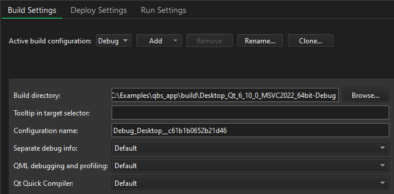
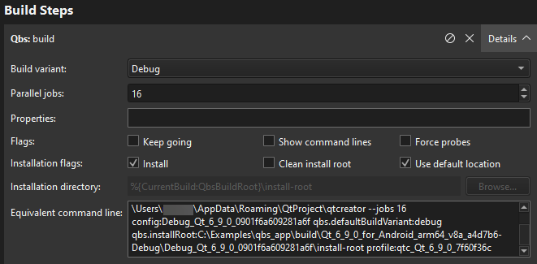
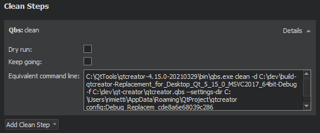

Qbs Build Configuration
To specify build settings for the selected kit, go to Projects > Build Settings.

Qbs builds projects in the directory that you specify in Build directory.
In Tooltip in target selector, enter text to show as a tooltip when you hover over the build configuration in the kit selector.
You can enter a name for the build configuration in Configuration name.
For more information about configuring Qbs, see Preferences: Qbs.
Separating Debug Info
If debug info is being generated, you can have it placed into separate files, rather than embedded into the binary, by selecting Enable in Separate debug info. For more information, see Analyze CPU usage. To use default settings, select Default.
Compiling QML
You can compile QML source code into the final binary to improve the startup time of the application and eliminate the need to deploy QML files together with the application. For more information, see Ahead-of-Time Compilation.
Qt Creator project wizard templates create Qt Quick projects that can be compiled because they are set up to use the Qt Resource System. To compile QML code, select Enable in Qt Quick Compiler. To use default settings, select Default.
Qbs Build Steps

To specify build steps for Qbs:
- In Build variant, select:
- Debug to include debug symbols in the build for debugging the application.
- Profile for an optimized release build that is delivered with separate debug information. It is best suited for analyzing applications.
- Release to create the final installation binary package.
- In Parallel jobs, specify the number of parallel jobs to use for building.
- In Properties, specify the properties to pass to the project. Use colons (:) to separate keys from values. For more information, see Qbs: Modules.
- In Flags, select:
- Keep going to continue building when errors occur, if possible.
- Show command lines to print actual command lines to Compile Output instead of high-level descriptions.
- Force probes to force re-execution of the configure scripts of QbProbes.
- In Installation flags:
- Select Install to copy artifacts to their install location after building them. This option is enabled by default.
Note: On Windows, the build will fail if the application is running because the executable file cannot be overwritten. To avoid this issue, you can clear this checkbox and add a Qbs Install deployment step in the run settings that will be performed just before running the application.
- Select Clean install root to remove the contents of the install root directory before the build starts.
- Select Use default location to install the artifacts to the default location. Clear the checkbox to specify another location in Installation directory.
- Select Install to copy artifacts to their install location after building them. This option is enabled by default.
Equivalent command line displays the build command that is constructed based on the selected options.
Qbs Clean Steps
When building with Qbs, you can specify flags in Clean Steps:

- Select Dry run to test cleaning without executing commands or making permanent changes to the build graph.
- Select Keep going to continue cleaning when errors occur, if possible.
Equivalent command line displays the clean command that is constructed based on the selected options.
See also Build Systems: Qbs, Preferences: Qbs, and Setting Up QML Debugging.